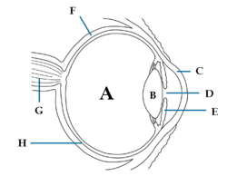

Čovjek može da razlikuje više miliona nijansi boja. Boje su nam važne za izbor odjeće, hrane, uređivanje stana; bojama se reguliše saobraćaj, one utiču i na naše raspoloženje. Razlikovanje boja, oblika i veličine predmeta, njihove udaljenosti, omogućava čulo vida. Gotovo 90% informacija iz okolne sredine dobijamo pomoću čula vida.
Čulo vida čine tri osnovna dijela: receptor, osjećajni nerv i centar. Oko je organ čula vida, u kome se smješteni fotoreceptori; oni primaju svjetlosne draži i pretvaraju ih u nadražaje. Očni nerv sprovodi nadražaje od oka do centra za vid, koji je smješten u potiljačnom dijelu kore velikog mozga. U centru se nadražaji dešifruju i mi postajemo svjesni onog što vidimo.
Oči su parni organi smješteni u očnim dupljama. Glavni dio oka je očna jabučica, a pomoćni djelovi su očni mišići, kapci, trepavice, vežnjača, suzne žlijezde i obrve.
Dijagram presjeka ljudskog oka: A - staklasto tijelo, B - očno sočivo, C - rožnjača, D - zjenica,
E - dužica, F - beonjača, G - očni živac, H - mrežnjača
Očna jabučica ima zid koga grade tri omotača. Spoljašnji omotač čine beonjača i rožnjača. Beonjača daje oblik i čvrstinu očnoj jabučici i štiti unutrašnje djelove oka. Na prednjem dijelu na beonjači se nastavlja rožnjača, koja propušta i prelama svjetlosne zrake.
Srednji omotač oka čine sudovnjača, dužica i cilijarno tijelo. Sudovnjača je bogata krvnim sudovima; ona obezbjeđuje ishranu oka. Sudovnjača sadrži mrki pigment, koji sprečava rasipanje svjetlosti i u unutrašnjosti oka stvara efekat mračne komore. Prednji dio srednjeg omotača je dužica. Boja dužice zavisi od količine mrkog pigmenta u njenim ćelijama. U sredini dužice je zjenica kroz koju svjetlost ulazi u unutrašnjost oka. Kontrakcijom mišića dužice sužava se i širi zjenica, čime se reguliše koliko će svjetlosti ući u oko.
Iza zjenice je očno sočivo, koje je dvogubo ispupčeno (bikonveksno), providno i elastično. Pri posmatranju predmeta koji su blizu ili onih koji su udaljeni, očno sočivo mijenja oblik, čime se postiže oštrina vida. Ovaj proces se naziva akomodacija. Očno sočivo je povezano sa cilijarnim tijelom, čiji mišić mijenja oblik sočiva. Unutrašnjost očne jabučice iza sočiva ispunjena je providnom pihtijastom supstancom, staklastim tijelom.
Unutrašnji omotač očne jabučice je mrežnjača. U ovom omotaču nalaze se fotoreceptori. Postoje dvije vrste fotoreceptora: čepići i štapići. Čepići su odgovorni za viđenje pri dnevnoj svjetlosti i za raspoznavanje boja. Štapića ima mnogo više, važni su za viđenje u sumrak i pri slabom osvjetljenju. Na zadnjem dijelu mrežnjače je mjesto koje sadrži samo čepiće; naziva se žuta mrlja. U žutoj mrlji se formira jasan lik gledanog predmeta. Nervna vlakna koja polaze iz mrežnjače obrazuju očni nerv. Mjesto gdje on napušta očnu jabučicu naziva se slijepa mrlja; ona ne sadrži fotoreceptore.
Svjetlosni zraci se odbijaju od predmeta koji posmatramo i dolaze do oka. Prolaze kroz rožnjaču, zjenicu, očno sočivo, staklasto tijelo i padaju na mrežnjaču. Na ovom putu kroz oko svjetlost se prelama i sabira.
Nastanak slike u oku
Očno sočivo najjače prelama svjetlosne zrake i usmjerava ih na žutu mrlju, gdje nastaje umanjena i obrnuta slika predmeta. Kada svjetlosni zraci padnu na mrežnjaču, fotoreceptori se nadraže. Nadražaj se prenosi očnim nervom do centra za vid u potiljačnom dijelu velikog mozga. Mozak iz oba oka dobija obrnutu sliku, zatim je usklađuje; tada sliku vidimo u prirodnoj veličini i položaju.
Pomoćni djelovi oka ne učestvuju u fotorecepciji i formiranju slike, ali su važni za normalno funkcionisanje čula vida. To su očni mišići, kapci sa trepavicama, vežnjača, suzne žlijezde, obrve.
Pokretanje očnih jabučica omogućavaju šest mišića. Ovi mišići vezani su jednim krajem za zid očne dupljem a drugim krajem za očnu jabučicu. Kapci i trepavice imaju zaštitnu ulogu. Kapci se refleksno zatvaraju i štite oko od spoljašnjih uticaja. I obrve imaju zaštitnu ulogu-sprečavaju slivanje znoja u oči. Unutrašnjost kapka, kao i beonjače, prekriveni su sluzokožom vežnjačom. Suzne žlijezde izlučuju suze-bistru, slanu tečnost koja vlaži i ispira oko. Suze se suznim kanalom slivaju i u nosnu duplju.
Kratkovide osobe imaju izduženu očnu jabučicu, pa slika udaljenog predmeta pada ispred mrežnjače. Ove osobe ne vide jasno udaljene predmete. Kratkovidost se koriguje nošenjem konkavnih (udubljenih) sočiva ili naočara.
Testovi vida
Dalekovide osobe imaju skraćenu očnu jabučicu; zato slika bliskih predmeta pada iza mrežnjače. Ne vide jasno predmete u blizini. Ova mana oka koriguje se nošenjem konveksnih (ispupčenih) sočiva ili naočara.
Staračka dalekovidost javlja se usljed toga što sočivo vremenom gubi elastičnost, pa se ne može akomodirati na gledanje predmeta u bizini. Česta je poslije četrdeset pete godine života.